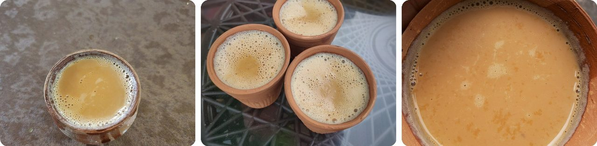
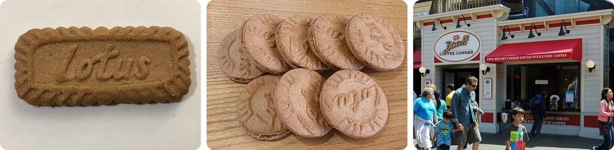

🌍 Top 10 Comida ridícula servida en trenes y aviones
15 de noviembre de 2026
1. 🇯🇵 El helado del tren bala japonés está demasiado duro para comerlo
 El helado de vainilla que venden en el Shinkansen (el tren bala de Japón) es tan famoso por lo duro que en internet le pusieron el apodo de "helado del Shinkansen demasiado duro". Desde 2021, esa broma es su nombre oficial de venta.
El helado de vainilla que venden en el Shinkansen (el tren bala de Japón) es tan famoso por lo duro que en internet le pusieron el apodo de "helado del Shinkansen demasiado duro". Desde 2021, esa broma es su nombre oficial de venta.
Aquí está el porqué. Los vagones no tienen congelador, así que los carritos lo mantienen frío con hielo seco. Además, tiene mucha grasa de leche y casi nada de aire batido. Frío más denso → la cuchara de plástico no entra, y a veces ni la tapa se puede quitar.
El fabricante dice que hay que esperar 10 minutos antes de comerlo. Algunas personas intentaron echarle café caliente encima para ablandarlo, y el café se congeló.
Es un antojo que viene con su propio cronómetro de 10 minutos.
2. 🇯🇵 El almuerzo famoso de una estación de Hokkaido es arroz metido dentro de un calamar
 En 1941, durante la Segunda Guerra Mundial, en Japón faltaba arroz. Un vendedor de almuerzos de la estación de Mori, en Hokkaido, notó que había muchísimos calamares, así que hizo rendir el arroz metiendo un poquito dentro de un calamar entero.
En 1941, durante la Segunda Guerra Mundial, en Japón faltaba arroz. Un vendedor de almuerzos de la estación de Mori, en Hokkaido, notó que había muchísimos calamares, así que hizo rendir el arroz metiendo un poquito dentro de un calamar entero.
Se le quitan los tentáculos, se limpia por dentro, se rellena de arroz y se cuece a fuego lento en dashi (caldo japonés). Unos palillos de dientes evitan que el arroz se salga.
Se llama ikameshi, "arroz de calamar". En 1966 participó en una gran feria de ekiben (almuerzos en caja de estación de tren) en una tienda departamental de Tokio, y para el segundo año ya era el más vendido. Hoy es una comida de Hokkaido que la gente busca a propósito.
O sea, el calamar es la lonchera.
3. 🇹🇼 El almuerzo de chuleta de cerdo del tren de Taiwán volvió después de 32 años y vendió 90 veces lo planeado
 Taiwan Railway vende unos cinco millones de almuerzos en caja al año. El clásico es una chuleta de cerdo sobre arroz con huevo estofado, tofu seco y rábano blanco seco, que los encargados llevan por el pasillo a la hora de la comida y de la cena.
Taiwan Railway vende unos cinco millones de almuerzos en caja al año. El clásico es una chuleta de cerdo sobre arroz con huevo estofado, tofu seco y rábano blanco seco, que los encargados llevan por el pasillo a la hora de la comida y de la cena.
Una versión antigua de chuleta llevaba 32 años fuera del menú. El 9 de junio de 2000 regresó para un Festival del Ferrocarril. Esperaban vender unas 1,000 cajas. Vendieron más de 90,000.
Imagínate hornear 1,000 galletas para una venta y encontrarte con 90,000 personas formadas.
4. 🇮🇳 El chai de los trenes de India viene en un vasito de barro que se tira

Un kulhad es un vasito de barro sin capa brillante, hecho para usarse una vez y tirarse. Como el barro está al natural, un poco del té caliente se mete en las paredes, y a mucha gente le encanta el olor "a tierra" que le da.En 2004, Indian Railways, con el ministro Lalu Prasad Yadav al frente, intentó regresar los kulhads a trenes y estaciones. La idea: más limpios que el plástico, mejores para la naturaleza y trabajo para los alfareros de los pueblos.
Los críticos hicieron cuentas. El ferrocarril tendría que deshacerse de unos 1,800 millones de vasos de barro al año, unos 5 millones cada día, y cada uno tendría que hornearse antes en un horno que quema combustible.
Es un vaso de papel, si el papel fuera de tierra.
5. 🇷🇺 Los trenes rusos todavía sirven el té en elegantes portavasos de metal
 Un podstakánnik ("lo que va debajo del vaso", en ruso) es un portavasos de metal con asa que envuelve un vaso de té. En las casas, ya son más que nada recuerdos y regalos. En los Ferrocarriles Rusos se siguen usando todos los días en los vagones dormitorio y en los vagones comedor.
Un podstakánnik ("lo que va debajo del vaso", en ruso) es un portavasos de metal con asa que envuelve un vaso de té. En las casas, ya son más que nada recuerdos y regalos. En los Ferrocarriles Rusos se siguen usando todos los días en los vagones dormitorio y en los vagones comedor.
La razón es el traqueteo. Un vaso de té caliente sin nada en un tren que se mece puede voltearse y quemar a alguien. El portavasos lo hace más estable, y tú agarras el asa en vez del vidrio caliente. Su llegada en masa a los ferrocarriles se relaciona con Serguéi Witte, en 1892.
La mayoría salen de una sola fábrica en el pueblo de Kolchúgino, y muchos están decorados con edificios, ciudades y momentos de la historia.
Piénsalo como un vaso entrenador para adultos en un tren que se sacude.
6. 🇺🇸 Un ferrocarril de EE. UU. convirtió papas "demasiado grandes para venderse" en su mascota
 En 1908, Hazen Titus, que dirigía los vagones comedor del Northern Pacific Railway, supo que los granjeros del valle de Yakima, en Washington, les daban sus papas a los cerdos. Cada papa pesaba de 2 a 5 libras, más o menos lo que una bolsa de harina, y los compradores pensaban que algo tan grande era demasiado tosco para comerse.
En 1908, Hazen Titus, que dirigía los vagones comedor del Northern Pacific Railway, supo que los granjeros del valle de Yakima, en Washington, les daban sus papas a los cerdos. Cada papa pesaba de 2 a 5 libras, más o menos lo que una bolsa de harina, y los compradores pensaban que algo tan grande era demasiado tosco para comerse.
Titus las probó horneadas a fuego lento y le parecieron deliciosas. Compró todas las papas de más de 2 libras que los granjeros pudieran cultivar y desde 1909 las sirvió en sus trenes. "La Gran Papa Grandota al Horno" fue el lema del ferrocarril durante unos 50 años.
Y aquí viene lo mejor. En 1914, el ferrocarril puso en el techo de su edificio de cocinas en Seattle un letrero de una papa al horno de 40 pies. Se iluminaba, le guiñaba los ojos a la gente y un trozo de mantequilla encima brillaba prendiéndose y apagándose.
O sea, la cena de los cerdos se volvió la estrella del menú.
7. 🇺🇸 En el primer vuelo de Pan Am solo les dieron chicle a los pasajeros
 En el primer vuelo de Pan Am no hubo comida. Lo único que repartieron fue chicle, para ayudar a evitar el mareo.
En el primer vuelo de Pan Am no hubo comida. Lo único que repartieron fue chicle, para ayudar a evitar el mareo.
Los aviones de entonces eran ruidosos e incómodos, y muchas veces los pasajeros estaban nerviosos porque volaban por primera vez.
Las primeras comidas de avión del mundo se sirvieron en 1919 en una ruta Londres–París: sándwiches y fruta a elegir. Después, Pan Am fue la primera aerolínea en calentar comida en pleno vuelo.
Todo el menú del avión cabía en tu bolsillo.
8. 🍱 La comida congelada de avión ayudó a inspirar la "cena de TV"
 Después de la Segunda Guerra Mundial, un veterano de la Marina llamado William Maxson inventó el "sky plate", una comida congelada que se calentaba a bordo. Al principio era para que los soldados comieran caliente.
Después de la Segunda Guerra Mundial, un veterano de la Marina llamado William Maxson inventó el "sky plate", una comida congelada que se calentaba a bordo. Al principio era para que los soldados comieran caliente.
Pan Am empezó a servir esas comidas congeladas ya hechas en sus aviones. Inspiraron las cenas de TV que se venden en los supermercados de Estados Unidos. A las aerolíneas les encantaban por algo sencillo: si se cancelaba un vuelo, la comida congelada no se echaba a perder.
La mayoría de las comidas de clase económica de hoy siguen funcionando igual: se preparan antes, se congelan y se calientan en la cocina del avión.
En otras palabras, cada cena de microondas tiene un poquito de comida de avión.
9. 🫒 American Airlines se ahorró 40,000 dólares al año quitando una aceituna
 En 1987, Robert Crandall, el jefe de American Airlines, supuestamente mandó quitar una aceituna de las ensaladas de las comidas de primera clase. Nadie se dio cuenta.
En 1987, Robert Crandall, el jefe de American Airlines, supuestamente mandó quitar una aceituna de las ensaladas de las comidas de primera clase. Nadie se dio cuenta.
Una aceituna es poquita cosa. Pero multiplícala por cada ensalada de primera clase en cada vuelo durante todo un año, y la aerolínea se ahorró hasta 40,000 dólares.
Crandall era famoso por recortar gastos. En otra historia que él mismo contó, recortó tanto la vigilancia de una bodega en el Caribe que el único guardia que quedó fue una grabación de un perro ladrando.
Es como quitarle una chispa de colores a cada dona y comprarte un carro con lo que ahorras.
10. 🇧🇪 Las galletas Biscoff sacaron su nombre de un trato de botanas en avión

Lotus es una panadería belga que hace unas galletas crujientes de caramelo y especias. En 1986 hizo un trato con Delta Air Lines para repartirlas a los pasajeros en lugar de cacahuates.Un empleado de Delta dice que él inventó el nombre "Biscoff" en ese momento, aunque Lotus no está de acuerdo. Como sea, la marca luego se extendió por todo el mundo, y otras aerolíneas también empezaron a servir las galletas.
En otras palabras, un cambio de botana en un avión se convirtió en una galleta conocida en todo el mundo.
Dato curioso
En el extremo opuesto a una aceituna de menos estaba el Concorde, el avión supersónico de Air France y British Airways. Sus pasajeros recibían de 3 a 6 platos, con langosta y trufas, en vajilla fina, y a veces chefs famosos cocinaban a bordo. Volaba tan alto, por encima del aire movido, que los sobrecargos podían llevar charolas con 15 copas por un pasillo de 16 pulgadas sin que el líquido se moviera. Para 2003, un viaje redondo costaba 12,000 dólares, y eso hace pensar qué otras máquinas increíbles se retiraron antes de que la mayoría pudiéramos subirnos.
Créditos de las fotos (Wikimedia Commons)
- #1: Meiraku's Sujahta High quality super premium ice cream in Shinkansen 2014.jpg by Ippei Suzuki, CC BY 2.0
- #1: シンカンセンスゴイカタイアイス ショーケース.jpg by Indiana jo, CC BY-SA 4.0
- #1: Sujahta Super Premium Ice Cream vending machine.jpg by 電車(新幹線)でゴー！, CC BY-SA 4.0
- #2: Mori-ikameshi.JPG by Gpx-evo, CC BY-SA 4.0
- #2: Ika-Meshi-1.jpg by Evelyn-rose, CC0
- #2: Ikameshi 001.jpg by Derral Chen, CC BY-SA 2.0
- #3: TRA Taichung Railways Restaurant pork ribs rice box 20180722b.jpg by yunlin2003, CC BY 2.0
- #3: TRA Taipei Railways Restaurant pork ribs rice box 20120826.jpg by ayustety, CC BY-SA 2.0
- #3: TRA Taichung Railways Restaurant pork ribs rice box (23822844139).jpg by Chi-Hung Lin, CC BY-SA 2.0
- #4: Kulhad Chai.jpg by Gannu03, CC BY-SA 4.0
- #4: Garam Chai.jpg by Mihir0699, CC BY-SA 4.0
- #4: Kulhad wali chai.jpg by Akshay Sanjay Agrawal, CC BY-SA 4.0
- #5: Стакан чаю подстаканник.JPG by V.Vizu, CC BY-SA 3.0
- #5: Glasingo 240224 14.jpg by VladimirPF, CC BY-SA 4.0
- #5: Rzd chai.png by Morido, CC BY-SA 3.0
- #6: Northern Pacific Railway big baked potato circa 1910s.JPG by Northern Pacific Railway, Public domain
- #6: Northern Pacific Great Big Baked Potato comic postcard.jpg by Northern Pacific Railway, Public domain
- #6: Northern Pacific Potato Chef.jpg by Northern Pacific Railway, Public domain
- #7: Passengers boarding Pan-Am Airways Fokker airplane, 1928.jpg by The New York Times, Public domain
- #7: Fruit-Stipe-Gum-Sticks.jpg by Evan-Amos, Public domain
- #7: Sikorsky S-38 Pan American Airways L'Aéronautique March,1929.jpg by L'Aéronautique magazine, Public domain
- #8: Airline meal asiana.jpg by Architxture, CC BY-SA 4.0
- #8: Vietnam Airlines - In-Flight Meal - with Fruit.jpg by Wiki.cullin, CC BY-SA 4.0
- #8: Inflight meal on 3U8210 (20230927184832).jpg by N509FZ, CC BY-SA 4.0
- #9: Fresh green olives and black olives served at a food display.jpg by Shixart1985, CC BY 2.0
- #9: Continental Airlines domestic First Class dinner.jpg by Alex Steffler from Houston, TX, US, CC BY 2.0
- #9: American Airlines - N972TW - Flickr - skinnylawyer.jpg by skinnylawyer from Los Angeles, California, USA, CC BY-SA 2.0
- #10: 2020-02-25 11 41 14 A Lotus Biscoff cookie in the Franklin Farm section of Oak Hill, Fairfax County, Virginia.jpg by Famartin, CC BY-SA 4.0
- #10: Lotus biscoff vanilla flavour (1).jpg by Fumikas Sagisavas, CC0
- #10: Biscoff coffee corner on Pier 39, San Francisco, 2011.jpg by DimiTalen, CC0


.jpg){kind=link}


.jpg){kind=link}


.jpg){kind=link}